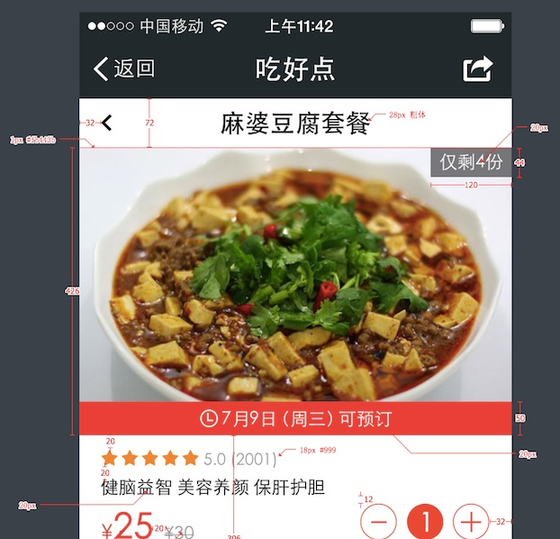
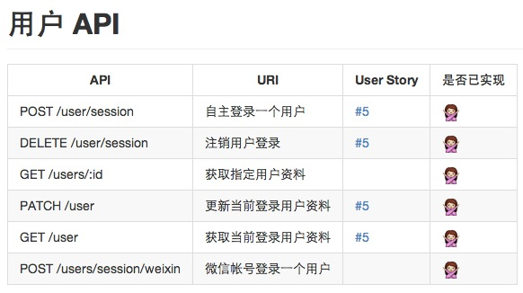

游子 XPD2 工作流
eXtreme Product Design & Development
胡杨刚
yangg.hu@yoozi.cn
下载讲稿
游子开源
2012 年第一版
WTF is XPD2?
eXtreme Product Design & Development.
游子团队多年来积累与总结形成的互联网产品设计和研发模型。
相比传统互联网研发体系，XPD2 中的 eXtreme（极限）主要体现在：
- 多：尽可能多的挖掘成员一切潜力。
- 快：尽可能快的将产品推入市场进行验证，从而尽可能可能早的发现和解决问题。
- 好：尽可能选择和使用业界最好的生产力工具和协作工具。
- 省：尽可能减少沟通环节和沟通成本。
主题 Walkthru
-
成员角色和组成原则
以小组为单位，搭建 XPD2 所需的精干产品团队。
-
迭代设计和迭代研发
将敏捷迭代理念注入到产品的设计、研发和生产的每一个环节。
-
协作流程和质量保证
通过自动化持续集成工具，结合 Peer Review 协作规则保证高质量研发产出。
成员角色 Members
-
产品经理（1人）
负责功能框架、时间节点、风险把控和内外部资源协调等。
-
交互设计师（1人）
负责产品信息架构、交互设计和界面细节等 UCD 体验设计。
-
视觉设计师（1人）
负责产品全部视觉界面的持续优化。
-
程序猿（若干）
负责产品的研发实现和优化，择一人作为架构师协调程序猿们。
时间分配 Time Management
每个产品迭代周期的时间分配遵守『3-6-1』准则：
- 至少 30% 的时间用于产品概念设计、低保真和高保真设计，并进行大量的技术选型和调研。
- 不超过 60% 的时间用于快速迭代开发，并穿插进行产品设计优化。
- 剩余 10% 的时间用于流程性测试和盲测，并作每轮上线前的最后改进。
概念设计 Conceptual Design
产品从无到有、从模糊到清晰的结构化设计阶段。梳理业务流程和完成目标制定是本阶段主要工作。
本阶段可能伴随多个有全员参加的头脑风暴座谈会。
- 负责人：产品经理
- 审核人：交互设计师
- 工具：
- 铅笔、纸、尺
- 电子绘图板
- XMind
- Microsoft Word
- 按需产出以下一项或多项：
- 功能框架图。
- 概念手绘稿。
- PRD 文档。
低保真设计 Low Resolution Design
制定交互规范，以概念设计为蓝本，精确设计视觉元素和信息架构。信息架构和人机交互是本阶段主要设计工作。
本阶段程序猿开始介入评估技术架构，并编写交互设计所需基础库代码。
- 负责人：交互设计师
- 审核人：视觉设计师
- 工具：
- 阶段性产出：
- Axure / OmniGraffle 交互设计稿。
- UI 交互规范。
高保真设计 High Resolution Design
确定 UI 视觉规范，设计像素级的产品原型和视觉素材，并初步确定产品界面文案。
本阶段进行大规模设计迭代，并组织一次全员中期项目会议——最后一次调整项目 Deadline。
- 负责人：视觉设计师
- 审核人：产品经理 / 交互设计师 / 架构师
- 工具：
- 阶段性产出：
- UI 视觉规范。
- 高保真设计稿。
- 高保真设计标注稿。

功能排期规划 Plans on Features
以 User Story 用户故事方式对产品功能进行分拆描述，同时为每个 User Story 设置优先级。本阶段需尽量保证每个产品功能相互独立、互不干扰，且排期设置合理。
- 负责人：产品经理
- 审核人：程序员
- 阶段性产出：
- User Story 用户故事。
- User Story 优先级清单。
技术架构规划 Plans on Tech
根据业务需求和产品原型，制定和准备实现产品功能所需的技术框架和技术规范。本阶段包含数据库设计、API 架构设计、前后端技术选型等主要工作。
- 负责人：架构师
- 审核人：产品经理 / 程序员
- 阶段性产出：
- 撰写开发者文档结构。
- 搭建代码托管项目，导入基础程序代码。
- 搭建自动集成环境。
- 搭建测试环境。
- 制定技术规范。

迭代研发 R&D Iteration
程序猿自行认领 User Story，并开始程序研发编码。每位程序猿负责从功能拆解、程序编码、单元测试到文档撰写的全流程工作内容。
- 负责人：程序猿
- 审核人：程序猿同伴
- 任何程序代码和文档均需经过同伴的审核（Peer Review）通过后，才能合并入主代码库。
- 禁止使用 IM 即时通讯工具（如微信、QQ、Skype 等）讨论产品和技术细节问题，任何具体功能和技术讨论均应该在项目管理软件中进行。
协作工具 Toolkits
适合 10~50 人之间的开发团队，每月固定财务花费约 200 USD（~ 1400 CNY）。
-
Basecamp：产品设计与规划执行
产品功能讨论（Messages）、文档协同撰写（Writeboards）、待办事项（To-Dos）、团队日历（Calendar）和时间管理（Time Tracking）
-
Github：源代码管理与缺陷跟踪
代码托管（Git）、产品功能路线图（Milestone）、代码审查（Code Review）、Bug 跟踪（Issues）
-
企业邮箱：信息中心与消息推送
通过绑定 QQ 或微信，将开发相关任务即时、准确的传达到每位订阅成员。
协作信息流 Collaborative Flow
- Basecamp：制定产品规划与开发分工
- QQ企业邮箱：成员参与讨论与制定规划
- 微信/QQ：推送订阅信息到指定成员
- Github：开发所需功能、缺陷跟踪
- 生产环境服务器：自动部署上线
交叉审查 Peer Review
- 任何阶段性产出需要交叉审核通过后，才能进入下一阶段流程。
- 任何程序代码和文档需经过交叉审核（Peer Review）通过后，才能合并入主代码库。
- 禁止使用 IM 即时通讯工具（如微信、QQ、Skype 等）讨论产品和技术细节问题，任何具体功能和技术讨论均应该在项目管理软件中进行。
- 所有交叉审核过程需要书面记录在案，方便回溯、并促进团队知识沉淀。
/